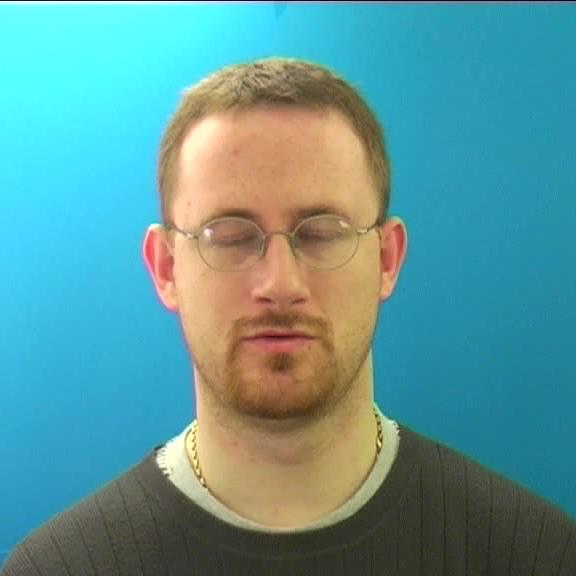
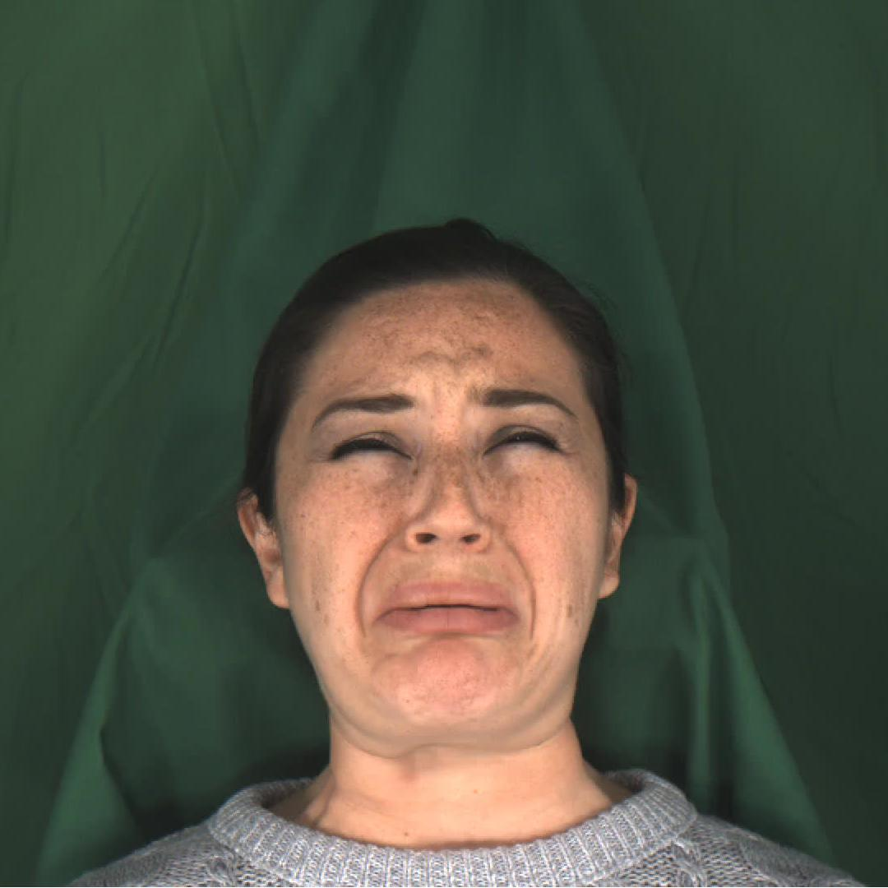
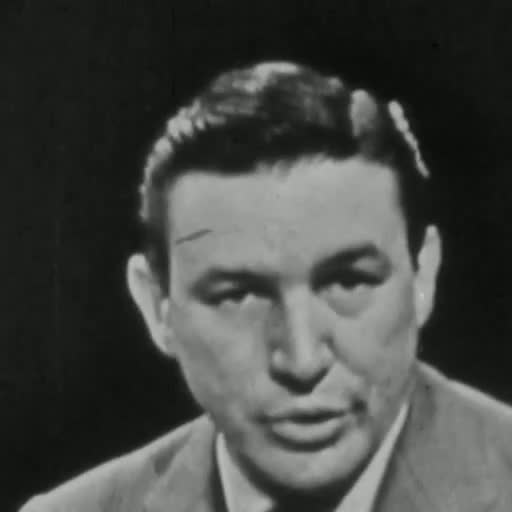
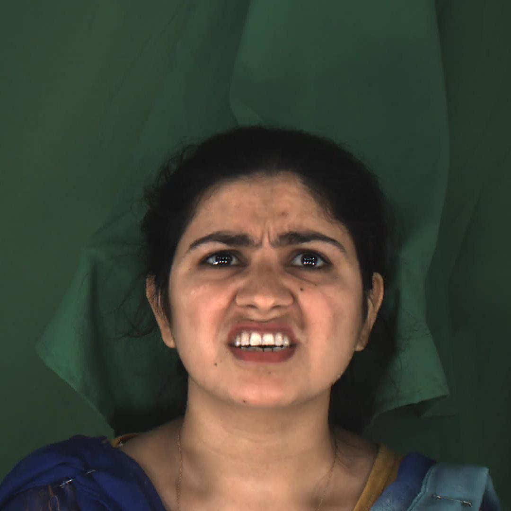

Abstract
Controllable speech generation methods typically rely on single or fixed prompts, hindering creativity and flexibility. These limitations make it difficult to meet specific user needs in certain scenarios, such as adjusting the style while preserving a selected speaker's timbre, or choosing a style and generating a voice that matches a character's visual appearance. To overcome these challenges, we propose \textit{FleSpeech}, a novel multi-stage speech generation framework that allows for more flexible manipulation of speech attributes by integrating various forms of control. FleSpeech employs a multimodal prompt encoder that processes and unifies different text, audio, and visual prompts into a cohesive representation. This approach enhances the adaptability of speech synthesis and supports creative and precise control over the generated speech. Additionally, we develop a data collection pipeline for multimodal datasets to facilitate further research and applications in this field. Comprehensive subjective and objective experiments demonstrate the effectiveness of FleSpeech.
Audio Samples
Single-Prompt Controllable TTS
This section will demonstrate FleSpeech's single-prompt control capability, meaning that the same prompt is used for both the language model and flow matching.
Text Prompt OnlyThe following table shows the synthesis results of FleSpeech, PromptTTS2, and Salle using the same text prompt. The audio samples are generated with different control attributes, such as fluctuations in tone, speaking rate, and volume. (Please note that Salle can not produce intelligible speech.)
| Target Text | Text Prompt | FleSpeech (proposed) | PromptTTS2[1] | Salle[2] |
|---|---|---|---|---|
| My dearest papa! | ||||
| when speaking, the speaker's voice subtly fluctuates in tone. | ||||
| with a tone that subtly varies in pitch, the person speaks in a voice that exhibits moderate fluctuations. | ||||
| there are notable fluctuations in the person's tone of voice, alternating between high and low pitches. | ||||
| Horribly vulgar! | ||||
| the speaker's vocal inflections are delicately nuanced, creating subtle tonal variations. | ||||
| the person speaks with a voice that varies moderately in tone. | ||||
| the person's voice danced through a lively rhythm, rising and falling with each word. | ||||
| I'd rather walk calmly along and do without both flying and thud. | ||||
| the speaker's words were delivered with a subdued, low voice. | ||||
| the person speaks with a balanced and medium voice tone. | ||||
| the speaker's voice is noticeably high in pitch. | ||||
| The reputation of being out of his mind, though harmlessly and even amusingly so, had procured for the abbe unusual privileges. | ||||
| murmured in a hushed and low tone. | ||||
| someone talks with the voice of a moderate pitch. | ||||
| the speaker's voice is high-pitched. | ||||
| But cannot one learn philosophy? | ||||
| murmured in a hushed and low tone. | ||||
| the speaker's voice had a medium pitch. | ||||
| the speaker's voice is characterized by a distinctly high-pitched tone. | ||||
| But it has been an amazing experience. | ||||
| his voice raced along, barely pausing for breath. | ||||
| the person is conversing at a standard speed, without excessive haste or delay. | ||||
| speaking at a deliberate pace. | ||||
| Nothing is safe. | ||||
| his words spilled out at breakneck speed. | ||||
| the voice is neither too fast nor too slow, but at a normal pace. | ||||
| the voice has a leisurely pace, taking its time to articulate each word. | ||||
| Michael discussed the saint and the matter today. | ||||
| the person's low volume made the words hard to catch. | ||||
| someone's voice is neither too low nor too high, just the right volume. | ||||
| The person's voice is so powerful. | ||||
| I am, Madame, very respectfully, | ||||
| only a faint whisper could be heard from the person. | ||||
| the person speaks with a moderate volume of voice, neither too soft nor too loud. | ||||
| The person's voice is so powerful. |
Face Prompt Only
The following table shows the synthesis results of FleSpeech, PromptTTS2, and MM-TTS using the same face prompt. The audio samples are generated conditioned on the face image and face caption.
| Target Text | Face Prompt | Face Caption | FleSpeech (proposed) | PromptTTS2[1] | MM-TTS[3] |
|---|---|---|---|---|---|
| It's now down in black and white. |  | A young man with a beard and glasses sits in front of a blue background, eyes closed and looking relaxed, wearing a gray sweater. | |||
| Theo discussed the jockey and the raft today | A young man with a beard and glasses sits in front of a blue background, eyes closed and looking relaxed, wearing a gray sweater. | ||||
| But we welcome this document. | A middle-aged man with a mustache and glasses stands in front of a white door, wearing a gray suit, white shirt, and patterned tie, with his mouth open as if speaking. | ||||
| Latterly some youngsters had arisen who sneered at his performances as behind the age. | A middle-aged man with a mustache and glasses stands in front of a white door, wearing a gray suit, white shirt, and patterned tie, with his mouth open as if speaking. | ||||
| You see - this business is a good one. | A young woman with black hair in an orange shirt looks surprised, with her mouth open and eyes wide. | ||||
| "That's not a bad little kingdom," we agreed when it was roughly drawn and measured. | A young woman with black hair in an orange shirt looks surprised, with her mouth open and eyes wide. | ||||
| I could hardly move for the next couple of days. |  | A young woman with dark hair in a gray sweater appears distressed, her eyes shut and mouth open as if about to scream. | |||
| Nothing is safe. | A young woman with dark hair in a gray sweater appears distressed, her eyes shut and mouth open as if about to scream. |
Audio Prompt Only
The following table shows the synthesis results of FleSpeech, NaturalSpeech2, and MM-TTS using the same audio prompt. The audio samples are generated conditioned on the audio prompt, which is a short audio clip and contain speaking style and speaker identity information.
| Target Text | Audio Prompt | FleSpeech (proposed) | NaturalSpeech2[4] | MM-TTS[3] |
|---|---|---|---|---|
| The election is total confusion and chaos. | ||||
| I'd rather walk calmly along and do without both flying and thud. | ||||
| It's now down in black and white. | ||||
| "That's not a bad little kingdom," we agreed when it was roughly drawn and measured. | ||||
| But it has been an amazing experience. | ||||
| Or else Uncle Roger is trying to fool us. |
Multi-Prompt Controllable TTS
The following table shows the synthesis results of FleSpeech using multi-prompts. The different prompts are fed into language model and flow matching separately, provide the speaking style and speaker identity information.
Text Prompt + Audio PromptThe following table shows the synthesis results of FleSpeech using text prompt and audio prompt. The text prompt is only fed into language model, and the audio prompt is only fed into flow matching. This means that the speaking style are controlled by the text prompt, and the speaker identity are controlled by the audio prompt.
| Target Text | Text Prompt | Audio Prompt | FleSpeech (proposed) |
|---|---|---|---|
| You see - this business is a good one. | |||
| The speaker's tone exudes anger. | |||
| There is a contemptuous undertone in the speaker's voice. | |||
| A sense of disgust is palpable in the speaker's tone. | |||
| The speaker's tone evokes fear. | |||
| Happiness shines through the speaker's voice. | |||
| The speaker's voice carries a tone of sadness. | |||
| The speaker's voice conveys surprise. | |||
| Throughout the centuries people have explained the rainbow in various ways. | |||
| The speaker's tone exudes anger. | |||
| There is a contemptuous undertone in the speaker's voice. | |||
| A sense of disgust is palpable in the speaker's tone. | |||
| The speaker's tone evokes fear. | |||
| Happiness shines through the speaker's voice. | |||
| The speaker's voice carries a tone of sadness. | |||
| The speaker's voice conveys surprise. | |||
| Now, suddenly, we have this new landscape. | |||
| The speaker's tone exudes anger. | |||
| There is a contemptuous undertone in the speaker's voice. | |||
| A sense of disgust is palpable in the speaker's tone. | |||
| The speaker's tone evokes fear. | |||
| Happiness shines through the speaker's voice. | |||
| The speaker's voice carries a tone of sadness. | |||
| The speaker's voice conveys surprise. | |||
| Today's meeting was open and friendly. | |||
| her words spilled out at breakneck speed. | |||
| the person's voice is at a regular pace, not hurried nor sluggish. | |||
| the speaker's voice unfolds slowly, softly pronouncing each syllable. | |||
| Victor discussed the fright and the patch today | |||
| the speaker's words tumbled out in a frenzied rush. | |||
| the person is conversing at a standard speed, without excessive haste or delay. | |||
| the speaker's voice flows gently, as he carefully enunciate his words. | |||
| The keeper relaxed his hold. | |||
| the person's voice is low. | |||
| someone talks with the voice of a moderate pitch. | |||
| the speaker's voice is noticeably high in pitch. | |||
| It's now down in black and white. | |||
| voice carried a muffled undertone. | |||
| the speaker's voice carried a neutral tone, falling in the middle ground of intensity. | |||
| the speaker's voice is noticeably high in pitch. | |||
| The election is total confusion and chaos. | |||
| the person's voice has slight variations in pitch. | |||
| the speaker's voice has moderate oscillations in tone. | |||
| the person's tone vibrant and ever-changing. | |||
| One morning, when the Cranes awakened, a fine young fellow began to strut up and down before the rest, bowing low, and leaping high into the air, and every now and then whooping as loudly as he could. | |||
| the person's voice possesses subtle undulations. | |||
| the speaker's voice has moderate oscillations in tone. | |||
| the person's voice danced through a lively rhythm, rising and falling with each word. | |||
| Victor discussed the jug and the being today | |||
| the person speaks with a slight and not noticeable fluctuation in his tone of voice. | |||
| the person's voice displays moderate fluctuations in tone. | |||
| the speaker's voice fluctuates dramatically, with strong variations in tone throughout. | |||
| It was started almost by accident. | |||
| the person speaks in a hushed tone, barely audible. | |||
| the speaker's volume is just right, not too soft to be heard nor too loud to be overwhelming. | |||
| The speaker's voice is so loud. |
Text Prompt + Face Prompt
The following table shows the synthesis results of FleSpeech using text prompt and face prompt. The text prompt is only fed into language model, and the face prompt is only fed into flow matching. This means that the speaking style are controlled by the text prompt, and the speaker identity are controlled by the face prompt.
| Target Text | Text Prompt | Face Prompt | Face Caption | FleSpeech (proposed) |
|---|---|---|---|---|
| We want the results as soon as possible before Thursday. | ||||
| The speaker's tone exudes anger. |  | A young man with dark hair wears a suit and tie, gazing directly at the camera, creating a sense of engagement. | ||
| There is a contemptuous undertone in the speaker's voice. | ||||
| A sense of disgust is palpable in the speaker's tone. | ||||
| The speaker's tone evokes fear. | ||||
| Happiness shines through the speaker's voice. | ||||
| The speaker's voice carries a tone of sadness. | ||||
| The speaker's voice conveys surprise. | ||||
| I can take you on my shoulders, and swim for both of us. | ||||
| a low voice escaped lips. |  | A young woman with dark hair in a blue shirt smiles slightly at the camera. | ||
| the speaker's voice was neither excessively high-pitched nor low-pitched. | ||||
| the speaker's voice is filled with a squeaky, high-pitched sound. | ||||
| Thornton was himself bruised and battered, and he went carefully over Buck's body, when he had been brought around, finding three broken ribs. | ||||
| the person's tone of voice is characterized by a deeper pitch. | A young woman with dark hair in a blue shirt smiles slightly at the camera. | |||
| the speaker's voice had a moderate and balanced tone. | ||||
| uttering words with a high-pitched voice, the speaker's tone feels elevated. | ||||
| That alters the case. | ||||
| the person's voice is low. | A young man with short black hair smiles at the camera, wearing a black hoodie with "BP" on it, against a solid green background. | |||
| someone talks with the voice of a moderate pitch. | ||||
| the speaker's voice is noticeably high in pitch. | ||||
| I'd rather walk calmly along and do without both flying and thud. | ||||
| the person's voice possesses subtle undulations. | A young man with black hair wears a black jacket against a green background, his mouth slightly open as if speaking or singing. | |||
| the person has a moderate degree of fluctuation in tone of voice. | ||||
| someone's voice oscillated wildly, reflecting intense variations in mood. | ||||
| But this was a distant enemy. | ||||
| the person's voice has slight variations in pitch. | A young woman with black hair in an orange shirt looks surprised, with her mouth open and eyes wide. | |||
| the speaker employs a voice that has moderate fluctuations in tone. | ||||
| the person's voice danced through a lively rhythm, rising and falling with each word. | ||||
| But it has been an amazing experience. | ||||
| the words poured out in a fast and relentless flow. | A young man with short black hair smiles at the camera, wearing a black hoodie with "BP" on it, against a solid green background. | |||
| the speaking rate remains consistent, without excessive acceleration or deceleration. | ||||
| the person speaks slowly, taking time to articulate each word. | ||||
| See, he has made a bosom of his shoulders! Because he wished to see too far before him Behind he looks, and backward goes his way: | ||||
| the speaker delivered her words at lightning speed. | A young woman with blonde hair and glasses speaks into a microphone, wearing a black tank top and earrings, with a solid blue background. | |||
| the voice is neither too fast nor too slow, but at a normal pace. | ||||
| the speaker's voice flows gently, as she carefully enunciate her words. |
Audio Prompt + Audio Prompt
The following table shows the synthesis results of FleSpeech using two audio prompts. The two audio prompts are fed into the language model and flow matching, respectively. This means that the speaking style are controlled by the first audio prompt, and the speaker identity are controlled by the second audio prompt.
| Target Text | Audio Semantic Prompt | Audio Acoustic Prompt | FleSpeech (proposed) |
|---|---|---|---|
| Destroy every file related to my audits | |||
| No one material is best for all situations | |||
| Todd placed top priority on getting his bike fixed |
Audio Prompt + Face Prompt
The following table shows the synthesis results of FleSpeech using an audio prompt and a face prompt. The audio prompt is fed into the language model, and the face prompt is fed into flow matching. This means that the speaking style are controlled by the audio prompt, and the speaker identity are controlled by the face prompt.
| Target Text | Audio Prompt | Face Prompt | Face Caption | FleSpeech (proposed) |
|---|---|---|---|---|
| Then he would realize they were really things that only he himself could think | A young woman with blonde hair and glasses speaks into a microphone, wearing a black tank top and earrings, with a solid blue background. | |||
| Don't ask me to carry an oily rag like that | A young woman with blonde hair and glasses speaks into a microphone, wearing a black tank top and earrings, with a solid blue background. | |||
| The clumsy customer spilled some expensive perfume | A young woman with blonde hair and glasses speaks into a microphone, wearing a black tank top and earrings, with a solid blue background. |
Extensibility
Speaking Style EditingThe following table shows the synthesis results of FleSpeech using a audio prompt and a style description. This task is to edit the speaking style of the audio prompt according to the style description. The audio prompt is fed into the language model and flow mathcing to provided speech content and speaker identity information, and the style description is fed into language model to guide the speaking style editing.
| Target Text | Origin Speech | |
|---|---|---|
| He is a Grammy-nominated, multi-platform singer and songwriter. | ||
| Style description | FleSpeech (proposed) | AudioBox[5] |
| The speaker's tone exudes anger. | There is a contemptuous undertone in the speaker's voice. | A sense of disgust is palpable in the speaker's tone. | The speaker's tone evokes fear. | Happiness shines through the speaker's voice. | The speaker's voice carries a tone of sadness. | The speaker's voice conveys surprise. | the speaker's voice fluctuates slightly in tone as she communicate. | the person speaks with a tone of voice that has moderate fluctuations. | the person's tone vibrant and ever-changing. | the voice raced through the speech. | the voice is at an ordinary tempo, without undue haste or sluggishness. | the speaker's voice flows gently, as she carefully enunciate her words. | the person's voice is low. | the speaker's voice had a medium pitch. | uttering words in a high tone, the speaker's voice sounds noticeably sharp. | The speaker's voice is so loud. | the speaker murmured her words quietly. | the speaker's voice is of a moderate volume, pleasant to the ears. |
Voice Conversion
The following table shows the synthesis results of FleSpeech using an audio prompt and a face prompt. This task is to convert the speaker's age, race and fatness in the audio prompt. Given the ground-truth audio tokens, the flow mathcing model is used to extract the speaker's identity information by face image and face caption. We use the same image but only edit the caption to control the speaker's identity.
| Origin Speech | Conditional Face Image | Conditional Face Caption | FleSpeech (proposed) |
|---|---|---|---|
| An older man with white hair sits in front of a blue background, wearing a black suit and purple tie. He looks to the left with a serious expression. | An younger man with white hair sits in front of a blue background, wearing a black suit and purple tie. He looks to the left with a serious expression. | ||
| A middle-aged, overweight man with a shaved head wears a gray jacket with a pink zipper. He gazes directly at the camera, creating a connection with the viewer. | A middle-aged, slim man with a shaved head wears a gray jacket with a pink zipper and looks directly at the camera, creating a connection with the viewer. | ||
| An older man with gray hair and a mustache appears on a news program in a gray suit and red tie, looking serious. | An younger man with gray hair and a mustache appears on a news program in a gray suit and red tie, looking serious. | ||
| A young, overweight man stands in front of a world map, wearing a white shirt and red tie with white polka dots, with brown hair and a slight smile. | A young, slim man stands in front of a world map, wearing a white shirt and red tie with white polka dots, with brown hair and a slight smile. | ||
| A middle-aged, overweight man with gray hair stands in front of a bookshelf, wearing a suit and tie, gazing directly at the camera. | A middle-aged, slim man with gray hair stands in front of a bookshelf, wearing a suit and tie, gazing directly at the camera. | ||
| A middle-aged, overweight man with blonde hair and blue eyes wears a suit and tie, gazing directly at the camera. | A middle-aged, slim man with blonde hair and blue eyes wears a suit and tie, gazing directly at the camera. |